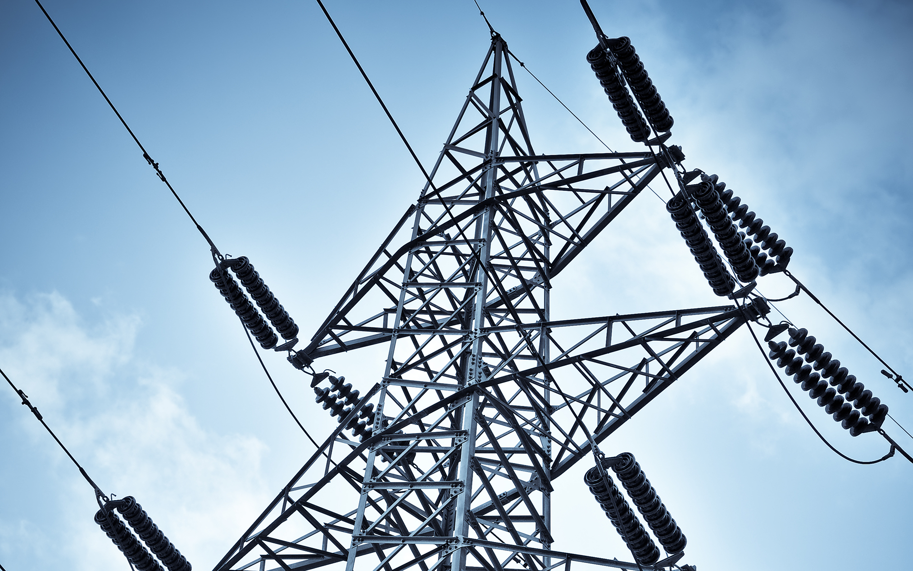

Mission
The 2015 US-China Student Energy and Environmental Case Competition brings together top institutions from US and China to host the very first competition of its kind, aiming to breed young top-tier leaders in energy and environment with a global mindset.
Participants are challenged to solve real-world problems faced by a Chinese city on its way to become low-carbon and sustainable. Working in teams with interdisciplinary knowledge and skills, participants must tackle one of the cases from five areas: clean water, air quality, social spaces, transportation, and green buildings.
Finalists will be invited to the final round in Berkeley, California and hack eco-city solutions with teammates from the other nationality.
Be cosmopolitan, be green, be ambitious and sign up today.
Agenda
Rules
General
The 2015 US-China Environment and Energy Case Competition is hosted by University of California, Berkeley and Tsinghua School of Environment and organized by a diverse student team consists of members from Berkeley Energy and Resources Collaborative, Tsinghua, Renmin University, Stanford University, China Youth Climate Action Network, etc. . Students with various academic and cultural backgrounds will tackle a brand new challenging case problem about low-carbon eco-city with their teammates. We hope every participant will have an opportunity to solve a real-life problem that demandsintegrative problem-solving and innovative thinking to get prepared to all kinds of situations that they might face at the forefront of the next wave of US-China collaboration in global energy and environment fields.
Eligibility
- Each team must consist of 2 participants who are currently enrolled in their university as full-time students. We allow graduate or MBA students to participate; however, this competition is still targeted at full-time undergraduate student in both U.S. and China. So each team must have at least one undergraduate student enrolled as full-time.
- The multidisciplinary nature of the energy and environmental industry requires each team to have members from different backgrounds. We highly encourage each team to have one student with strong science background, and the other with humanity background.
- The competition is open to academic or professional advisors deemed acceptable by the organizers. However, in respecting the spirit of the fair competition, advisors are not permitted to read the participants’ proposal or involve in giving feedbacks to writing responses. Meanwhile, each team should include the basic information of anyone who has helped when submitting the proposal in the one-page acknowledgement. Teams violating this requirement will be disqualified immediately and for any future competitions.
- Deadline for both registration and team change is Nov 13,2014
Judges

HARRISON FRAKER JR.
Professor of architecture, Chair of Energy and Resources Group, former dean of UC Berkeley’s College of Environmental Design

DANIEL KAMMEN
Distinguished Professor of Energy at the University or California, Berkeley, with parallel appointments in the Energy and Resources Group, the Goldman School of Public Policy, and the department or Nuclear Engineering
KEBIN HE
Division of Air Pollution Control, Chair of Tsinghua School of Environment
JIANE ZUO
Professor and Vice Chair of Tsinghua School of Environment

CAN WANG
Professor and Chair of the Department of Environmental Planning and Management

STEPHANIE OHSHITA
Working in China Energy Group, Associate Professor in University of San Francisco

PEGGY LIU
Chairperson of JUCCCE, is internationally recognized for her expertise on China’s sustainability landscape and for fostering international collaboration with China
Themes

Air Quality
Air pollution problems in many Chinese cities have raised the awareness on the ubiquitous and chronic impacts on human health and ecology. Air quality issues need to be tackled via controlling sources, understanding pollutant transports, and human exposures.
Policies and Strategies
Next year, Chinese cities are required to lower energy consumption by 15% comparing with 2011 baseline. Effectively reducing carbon emission becomes a great challenge for local government. Successful low-carbon city strategies require comprehensive and integrated solutions.
Low-Carbon Transportations
Transportations are the veins of a city that keeps the giant machine running. City planners and denizens face many mode and design options: traditional automobiles, hybrid and electric cars, buses, metro, bikes, as well as the layouts of roads and public transportation routes.

Smart Grid and Distributed Generation
China is the world's largest consumer of electricity. Smart grid and distributed generation are still emerging technologies and only realized through piloting projects. A combination of both could have a large role to play in future electricity system.